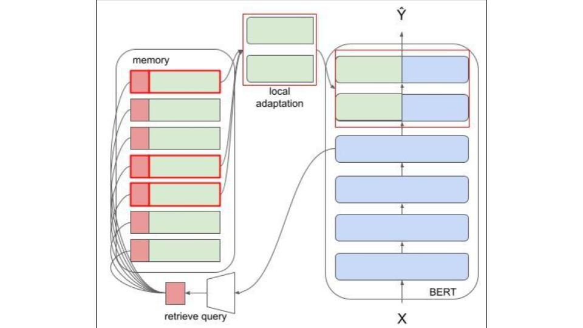

研究の目的
中期記憶を用いて省コストな学習を行う
概要
深層学習は多くのソフトウェアプロダクトで用いられているが，一般にこれらの学習時には膨大なマシンのリソースを要する．それにより非力なリソースしかもたないエッジデバイス上ではモデルの学習ができない．エッジデバイス上で深層モデルを利用する際，プライベートな情報の漏洩や回線状態が悪い状況があることなどが課題としてあるためエッジデバイス上で学習を行うことは特に役立つと見込まれ画像モデルでの省メモリアーキテクチャが提案されたが，これは一般化されたものでなく自然言語処理モデルには利用できなかった．よって本研究では自然言語処理モデルでも利用できる省メモリアーキテクチャをエピソード記憶モジュールを用いて構築する．エピソード記憶モジュールを用いた省メモリアーキテクチャは大規模モデルの一部パラメータを学習させる事で省メモリ化を行うため，事前実験として24個のモデルと6個の層単位学習に対して，メモリ利用量とf1スコアの計測を行った．その結果メモリ利用量とf1スコアには有意な正の相関があり，アクティベーション量によってメモリ量が増加することが確認され，それによってエピソード記憶モジュールを利用し偶数層単位で学習することはメモリ利用量において有効であることがわかった．
コーディングについて
以下のものを用いて実験を行いました。
- Python
- Tensorflow
- GCP(GCE, TPU, Storage)